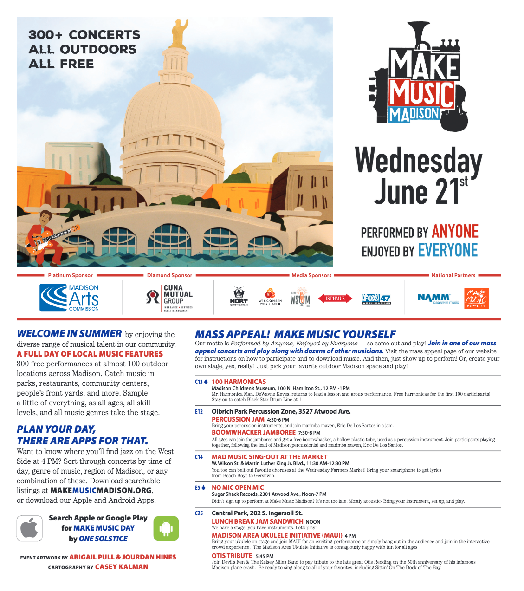
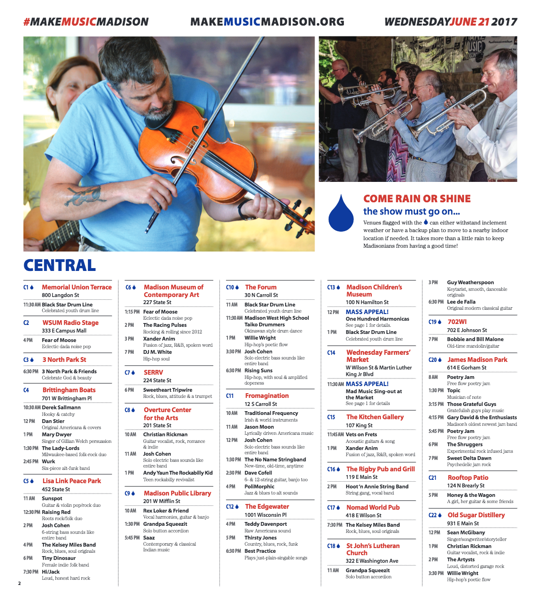
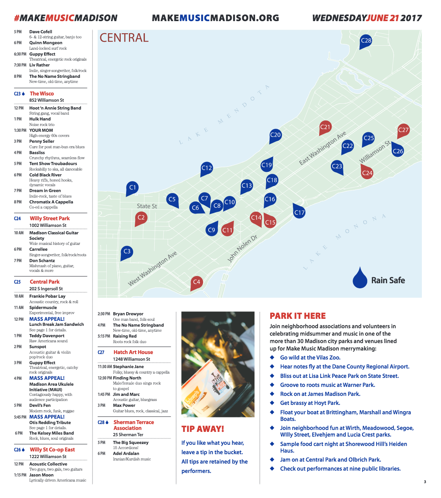
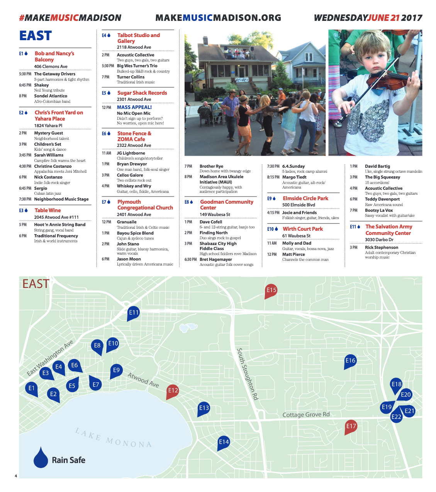
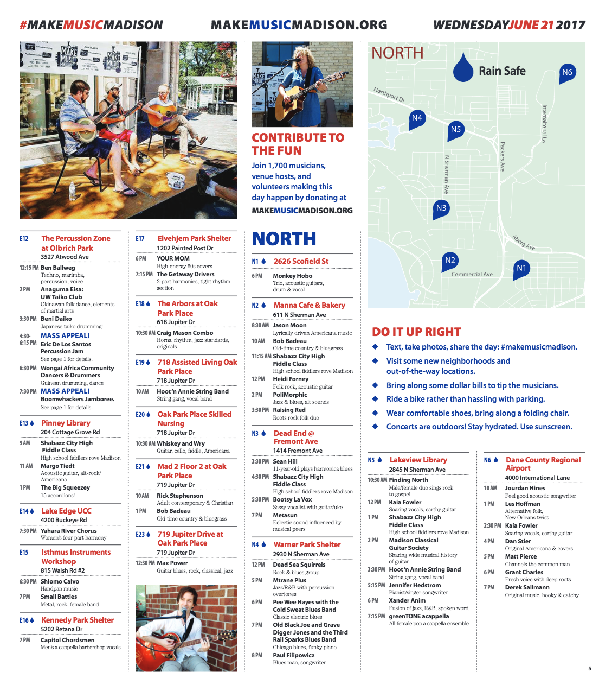
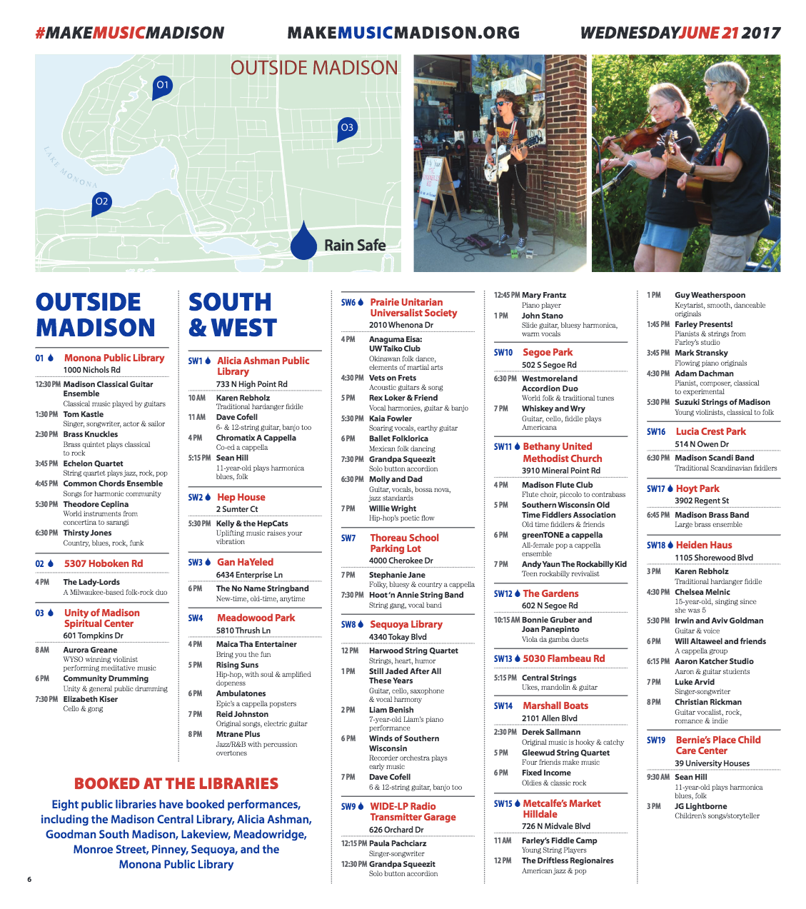
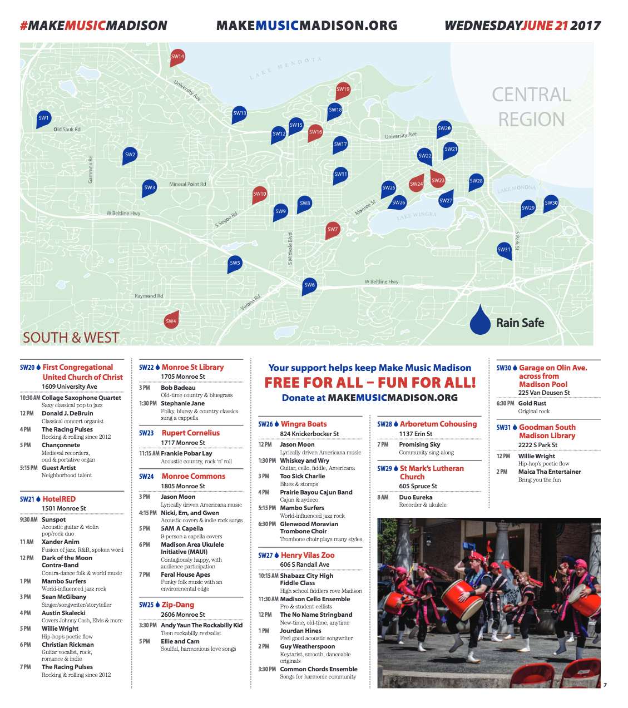
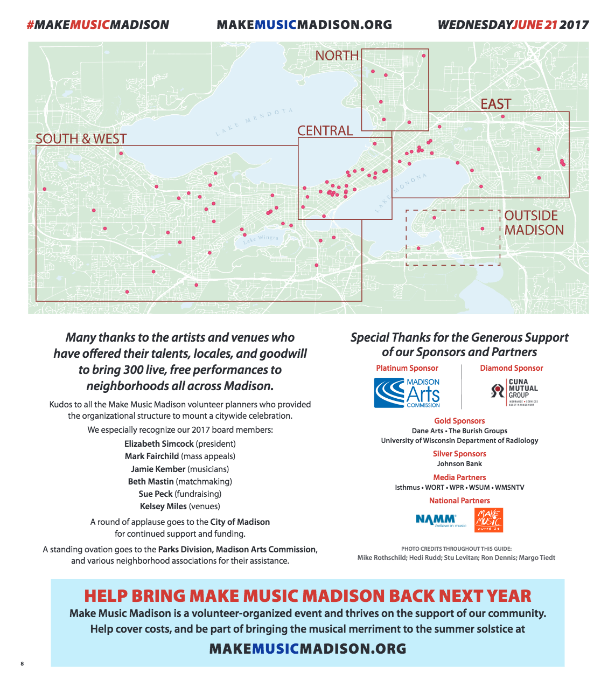

Make Music Madison is an annual event in Madison,WI in which hundreds of local musicians perform throughout the city. For Make Music Madison 2017, I volunteered my cartography skills to create maps for the Isthmus showing performance locations including which locations were considered "rain safe".
Back to portfolio







